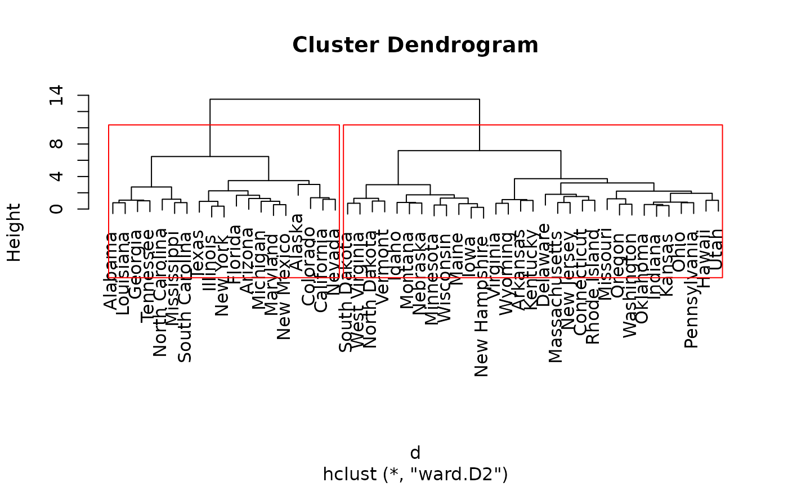

Identify the Optimal Number of Clusters Based on Maximum Fusion Height
Source:R/maxFusionLevel.R
maxFusionLevel.RdIdentifies the number of clusters corresponding to the largest increase in fusion height in a hierarchical clustering dendrogram.
Arguments
- cluster
An object of class
hclust, typically obtained usingstats::hclust().
Value
A list containing:
- n.clust
Integer vector indicating the number of clusters corresponding to the maximum increase in fusion height. Multiple values may be returned in the case of ties.
- results
A data frame containing:
h: fusion heights.n.clust: number of clusters before each fusion.diff: differences between consecutive fusion heights.
Details
The function calculates the difference between consecutive fusion heights obtained from a hierarchical clustering analysis.
The optimal number of clusters is identified as the number of groups immediately before the largest increase in fusion height.
A large increase suggests that relatively dissimilar clusters are being merged, potentially indicating a meaningful partition of the dataset.
This is a heuristic criterion and does not guarantee the identification of the ecologically or statistically optimal number of clusters. Results may depend on the distance measure and linkage method used.
Examples
# Hierarchical clustering using the USArrests dataset
data(USArrests)
d <- dist(scale(USArrests))
hc <- hclust(d, method = "ward.D2")
# Identify the number of clusters
res <- maxFusionLevel(hc)
# Suggested number of clusters
res$n.clust
#> [1] 2
# Fusion heights and their differences
res$results
#> h n.clust diff
#> 1 0.2058539 50 NA
#> 2 0.3502188 49 0.144364899
#> 3 0.4287712 48 0.078552416
#> 4 0.4940832 47 0.065312015
#> 5 0.5353893 46 0.041306068
#> 6 0.5535286 45 0.018139387
#> 7 0.5935343 44 0.040005700
#> 8 0.6559259 43 0.062391556
#> 9 0.7038309 42 0.047905009
#> 10 0.7108812 41 0.007050268
#> 11 0.7389936 40 0.028112413
#> 12 0.7722224 39 0.033228861
#> 13 0.7781298 38 0.005907377
#> 14 0.7865674 37 0.008437523
#> 15 0.7977642 36 0.011196804
#> 16 0.8076434 35 0.009879204
#> 17 0.8472042 34 0.039560844
#> 18 0.9427614 33 0.095557211
#> 19 0.9513719 32 0.008610445
#> 20 0.9824857 31 0.031113824
#> 21 1.0122252 30 0.029739526
#> 22 1.0598104 29 0.047585190
#> 23 1.0709720 28 0.011161575
#> 24 1.0756115 27 0.004639495
#> 25 1.0910920 26 0.015480576
#> 26 1.1606271 25 0.069535066
#> 27 1.1968261 24 0.036198967
#> 28 1.2074603 23 0.010634257
#> 29 1.2601290 22 0.052668642
#> 30 1.2990516 21 0.038922610
#> 31 1.3169658 20 0.017914169
#> 32 1.3449118 19 0.027946047
#> 33 1.3901014 18 0.045189630
#> 34 1.5396377 17 0.149536250
#> 35 1.6907596 16 0.151121938
#> 36 1.7484165 15 0.057656842
#> 37 1.8118061 14 0.063389664
#> 38 1.9360777 13 0.124271589
#> 39 2.2033391 12 0.267261385
#> 40 2.2421782 11 0.038839123
#> 41 2.7145543 10 0.472376097
#> 42 2.9932892 9 0.278734904
#> 43 3.0250236 8 0.031734392
#> 44 3.2107135 7 0.185689846
#> 45 3.4960481 6 0.285334652
#> 46 3.7341155 5 0.238067364
#> 47 6.4618664 4 2.727750963
#> 48 7.1881893 3 0.726322905
#> 49 13.5162424 2 6.328053004
# Plot the dendrogram with the suggested partition
plot(hc)
rect.hclust(hc, k = res$n.clust[1], border = "red")
